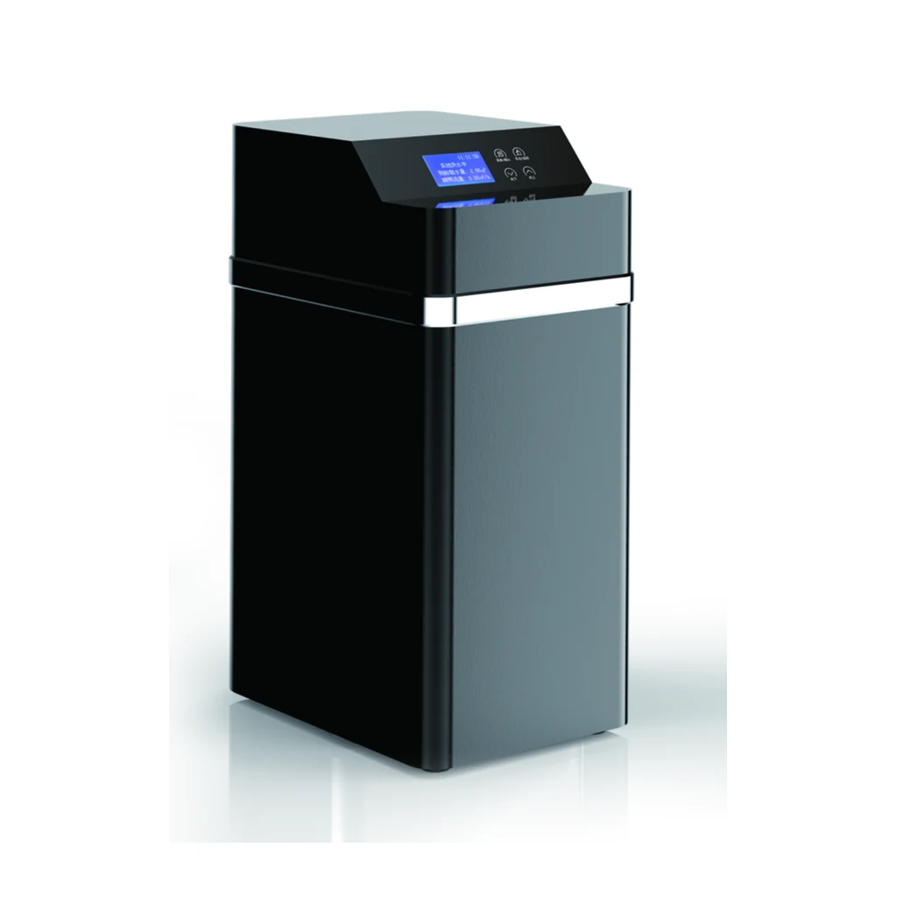
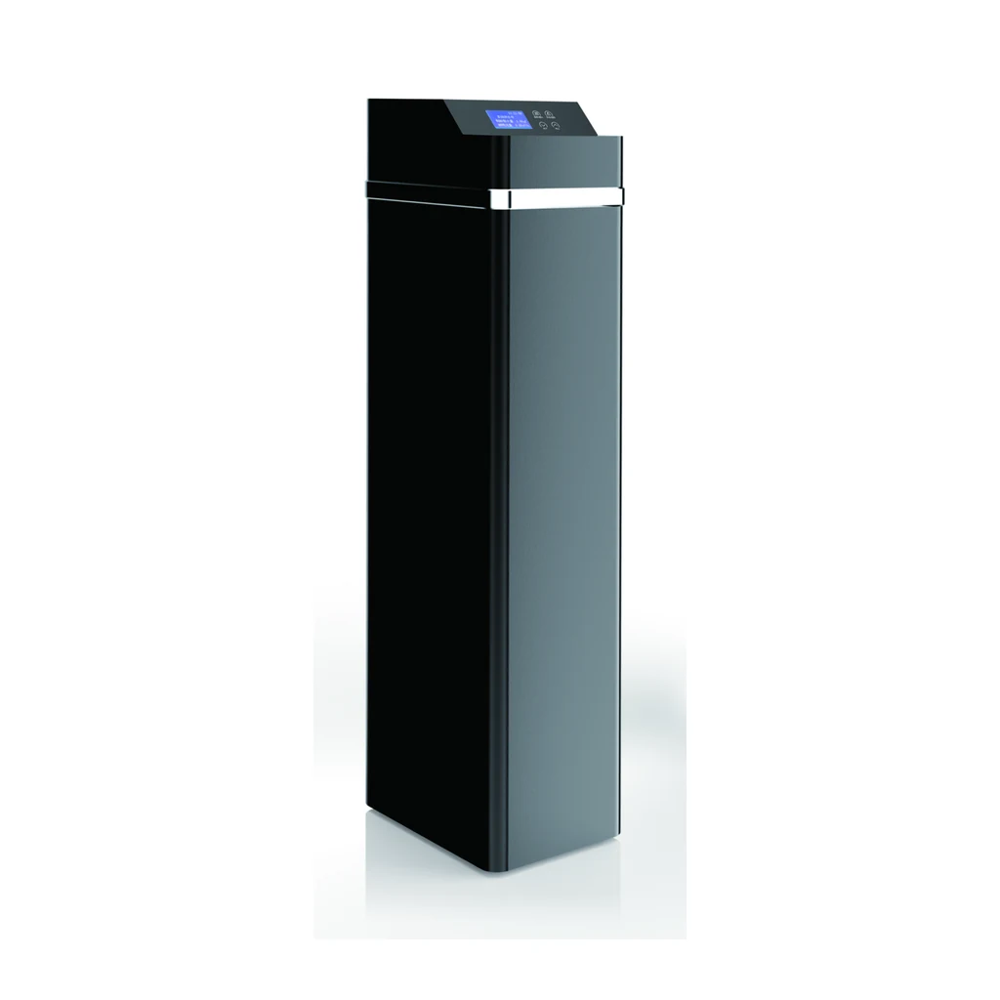

Máy làm mềm nước tự động
YC-R1000C
YC-R1000C có kích thước sản phẩm (có đường bypass) được liệt kê trong nguồn là 270X420X510mm.
Yêu cầu báo giá cho YC-R1000CDòng YC-RC sử dụng các giá trị thông số đã được xác nhận của dòng A, với hậu tố C trong mã model và các hình ảnh tủ riêng được thể hiện trong nguồn.
Ghi chú rà soát nguồn: Các hậu tố model phản ánh nội dung hiệu chỉnh đã được xác nhận và cung cấp kèm theo nguồn đã rà soát; các giá trị số và đơn vị vẫn giữ nguyên.
Mỗi hình ảnh được cắt theo quy tắc cố định, có thể tái lập, từ vùng chỉ chứa sản phẩm trong PDF đã được phê duyệt; không có hình dạng hình học, màu sắc, bộ điều khiển hay phụ kiện nào của sản phẩm được vẽ lại.

YC-R1000C có kích thước sản phẩm (có đường bypass) được liệt kê trong nguồn là 270X420X510mm.
Yêu cầu báo giá cho YC-R1000C
YC-R2000C có kích thước sản phẩm (kèm bộ bypass) được liệt kê trong nguồn là 270X420X710mm.
Yêu cầu báo giá cho YC-R2000C
YC-R3000C có kích thước sản phẩm (bao gồm bộ đường vòng) được liệt kê trong nguồn là 270X420X1020mm.
Yêu cầu báo giá cho YC-R3000CBảng so sánh dòng máy làm mềm nước tự động YC-RC sử dụng các mã định danh YC công khai đã được chủ sở hữu phê duyệt. Mọi giá trị kỹ thuật và đơn vị dưới đây đều giữ nguyên cách ghi trong nguồn đã được rà soát.
| Thông số | YC-R1000C | YC-R2000C | YC-R3000C |
|---|---|---|---|
| Loại van | Van làm mềm nước tự động | Van làm mềm nước tự động | Van làm mềm nước tự động |
| Chế độ tái sinh | Kết hợp điều khiển theo lượng nước và hẹn giờ/Hẹn giờ | Kết hợp điều khiển theo lượng nước và hẹn giờ/Hẹn giờ | Kết hợp điều khiển theo lượng nước và hẹn giờ/Hẹn giờ |
| Áp suất làm việc | 0.15-0.5MPa | 0.15-0.5MPa | 0.15-0.5MPa |
| Nguồn điện | 220V/110 50Hz | 220V/110 50Hz | 220V/110 50Hz |
| Kích thước cổng nước vào và nước ra | 3/4" | 3/4" | 3/4" |
| Kích thước đường xả | 12mm | 12mm | 12mm |
| Nhiệt độ làm việc | 5~48℃ | 5~48℃ | 5~48℃ |
| Van nước muối | Có | Có | Có |
| Thể tích hạt nhựa trao đổi ion | 12L | 18L | 25L |
| Kích thước bình FRP | 1015 | 1024 | 1035 |
| Lưu lượng | ≤1.0T/H | ≤2.0T/H | ≤3.0T/H |
| Kích thước sản phẩm (kèm bộ bypass) | 270X420X510mm | 270X420X710mm | 270X420X1020mm |
Bảng thông số dòng máy làm mềm nước tự động YC-RC đã được rà soát ghi nhận van làm mềm nước tự động, chế độ tái sinh Meter Timer Mix/Timer, thể tích hạt nhựa và van nước muối. Trong cấu hình làm mềm nước điển hình, van điều khiển quá trình cấp nước sử dụng và tái sinh qua lớp hạt nhựa; đặc tính hóa học của hạt nhựa và khả năng xử lý định mức cần được xác nhận riêng.
YC-R2000C được ghi với lưu lượng ≤2.0T/H, thể tích nhựa trao đổi ion 18L, kích thước bình FRP 1024 và kích thước sản phẩm (có đường bypass) 270X420X710mm.
YC-R1000C được ghi với lưu lượng ≤1.0T/H và thể tích nhựa trao đổi ion 12L; YC-R3000C được ghi với lưu lượng ≤3.0T/H và thể tích nhựa trao đổi ion 25L.
Không. Mỗi giá trị lưu lượng YC-RC được giữ nguyên theo dòng thông số lựa chọn được liệt kê trong nguồn và phải được xác nhận dựa trên điều kiện nước cấp và thiết kế hệ thống.
Cung cấp model YC-RC chính xác, kết quả phân tích nước đầu vào, yêu cầu về điện, chi tiết đấu nối, cấu hình dự kiến và số lượng cho dự án.